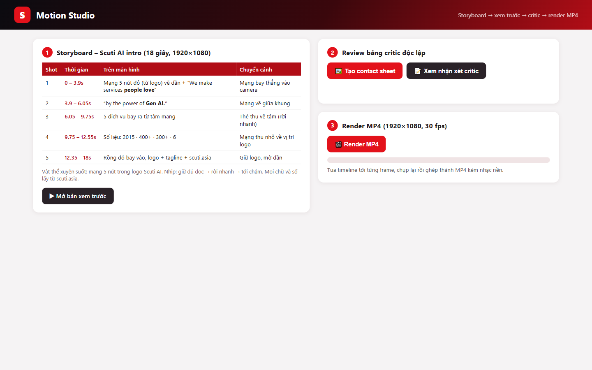
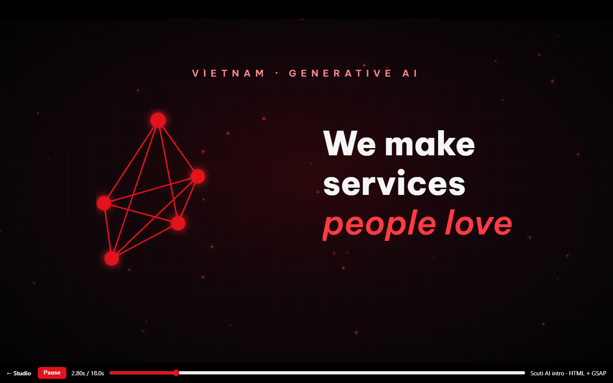
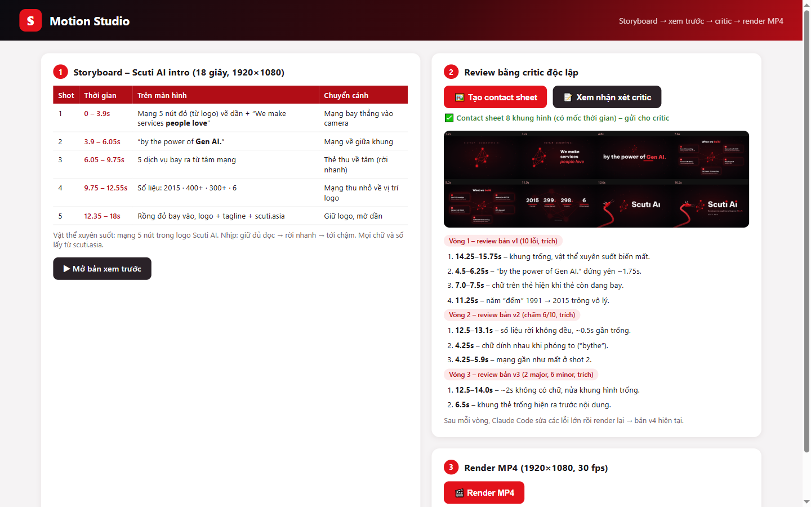
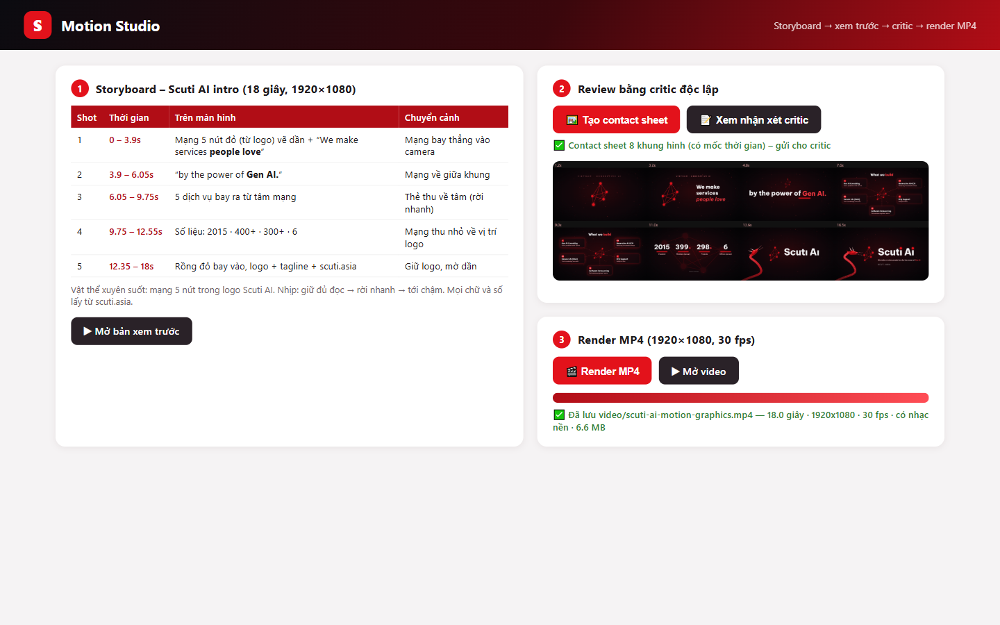
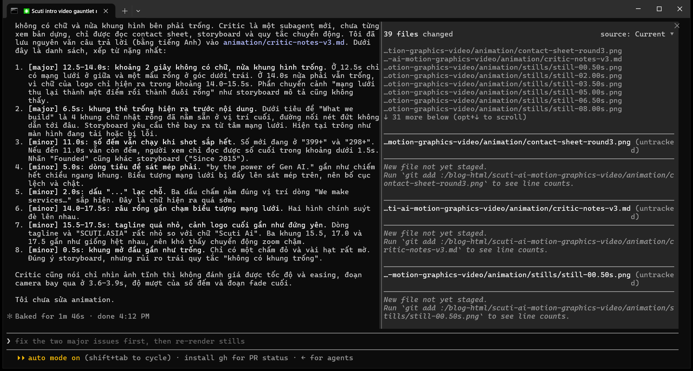
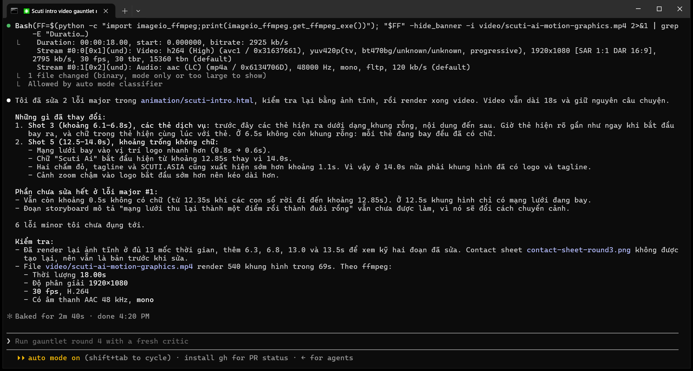

Claude Code viết animation bằng HTML + GSAP, review bằng một “critic” độc lập qua 3 vòng, rồi render từng frame thành MP4 Full HD. Thành phẩm 18 giây.
Bài này ghi lại cách mình làm video giới thiệu Scuti AI dài 18 giây bằng Claude Code. Ý tưởng lấy từ bài “how to run an ai video agency (FULL GUIDE)” của Chris (@everestchris6) trên X: video motion graphics có thể “viết bằng code”. AI viết chữ, chuyển động và chuyển cảnh bằng HTML + GSAP, rồi render từng frame ra MP4. Không cần After Effects.
Quy trình gồm 3 bước: storyboard → build → critic. Ở bước critic, một agent mới chưa từng xem quá trình build sẽ review video. Mình viết mỗi bước thành 1 prompt:
| Shot | Thời gian | Nội dung |
|---|---|---|
| 1 | 0 – 3.9s | Mạng 5 nút đỏ vẽ dần + “We make services people love” |
| 2 | 3.9 – 6s | Mạng bay vào camera → “by the power of Gen AI.” |
| 3 | 6 – 9.75s | 5 dịch vụ bay ra từ tâm mạng |
| 4 | 9.75 – 12.5s | Số liệu: 2015 · 400+ · 300+ · 6 |
| 5 | 12.5 – 18s | Rồng đỏ bay vào, logo + tagline + scuti.asia |
| Công cụ | Dùng để làm gì |
|---|---|
| Claude Code (Claude Opus 5.5) | Viết storyboard, code animation, và gọi một agent mới làm critic |
| HTML/CSS + GSAP 3 | “Video là code”: một timeline GSAP, tua được tới bất kỳ giây nào |
| Motion Studio (trang web chạy trên máy) | Nơi thao tác: xem storyboard, xem trước, tạo contact sheet, bấm render |
| Chrome + ffmpeg | Tua tới từng frame, chụp ảnh Full HD, ghép thành MP4 kèm nhạc nền |
Chạy python studio/studio_server.py rồi mở http://localhost:8766/studio/ trên Chrome.
Bên trái là storyboard 5 shot, bên phải là 2 việc còn lại: review bằng critic và render MP4.

Bấm “▶ Mở bản xem trước”, animation chạy ngay trong Chrome và kéo thanh thời gian được. Sửa code → F5 → xem lại.

Bấm “🖼️ Tạo contact sheet” để ghép 8 khung hình có ghi giây, gửi cho một agent mới chưa thấy quá trình build (Prompt 3). Bấm “📝 Xem nhận xét critic” để xem lỗi qua 3 vòng.

Bấm “🎬 Render MP4”: tua 540 frame, chụp 1920×1080, ffmpeg ghép thành MP4 kèm nhạc. Xong thì bấm “▶ Mở video” để xem.

| Bản | Critic chỉ ra (lỗi lớn nhất) | Đã sửa |
|---|---|---|
| v1 19s | Khung trống 1.5 giây, chữ đứng yên quá lâu, chữ trên thẻ hiện khi thẻ còn đang bay, năm “đếm” 1991 → 2015 | Dựng lại timeline, chữ hiện khi thẻ hạ cánh, năm cố định |
| v2 18s | Chấm 6/10: số liệu rời không đều, chữ dính nhau khi phóng to, mạng gần như biến mất ở shot 2 | Số liệu rời cùng lúc, chữ trồi từ dưới lên, mạng luôn hiện rõ |
| v3 18s | Vòng 3, critic mới phải ghi mức độ từng lỗi: 2 lỗi major. Ở 6.5s các thẻ hiện ra dưới dạng khung rỗng; ở 12.5–14s có khoảng 2 giây không có chữ, nửa khung hình trống | Thẻ có chữ ngay khi bay ra, chữ logo hiện từ 12.85s thay vì 14s |
| v4 18s | Còn 6 lỗi minor và khoảng 0.5s chuyển cảnh không có chữ, dừng vòng lặp | Bản cuối |
Vòng 3 mình làm thẳng trong terminal với 2 prompt, tổng cộng khoảng 10 phút.
Prompt 1: chụp ảnh tĩnh, ghép contact sheet, gọi subagent critic mới, mỗi lỗi ghi rõ major hay minor. Critic tìm ra 2 lỗi major mà 2 vòng trước bỏ sót: thẻ rỗng ở 6.5s và khoảng 2 giây không có chữ ở 12.5–14s.

Prompt 2: “Fix the major problems only”. Claude sửa timeline GSAP, render lại và kiểm tra bằng ffmpeg, đồng thời ghi rõ phần chưa sửa (6 lỗi minor).

Video quá trình có 2 phần. Phần đầu (khoảng 2 phút) là phiên Claude Code trong terminal ở mục 6; các đoạn chờ được tua nhanh. Phần sau là thao tác trên Motion Studio, từ lúc mở Studio đến khi render xong và phát video thành phẩm.